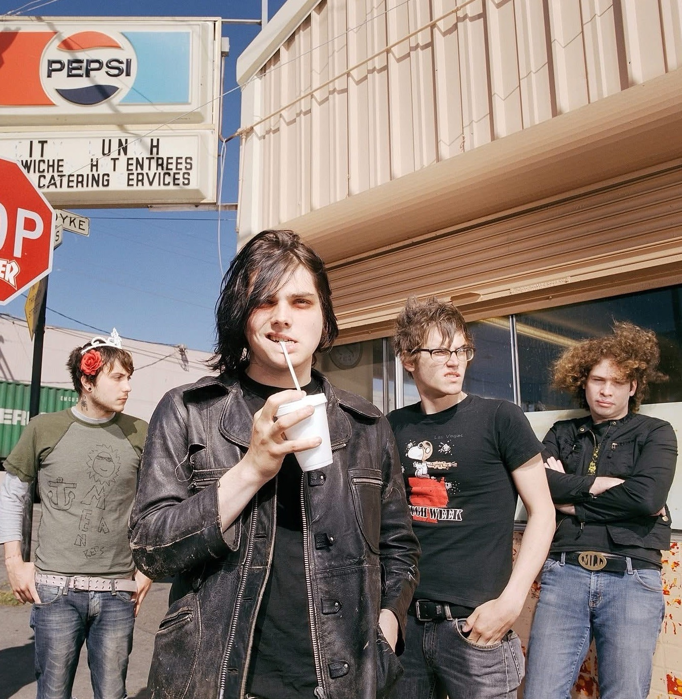

MY CHEMICAL ROMANCE


My Chemical Romance es una banda de rock estadounidense originaria de Nueva Jersey. La formación actual está compuesta por el vocalista Gerard Way, el guitarrista Ray Toro, el guitarrista rítmico Frank Iero y el bajista Mikey Way. Se les considera uno de los grupos de rock más influyentes de la década de 2000 y una banda destacada dentro de los géneros emo y pop-punk, a pesar de que la banda rechaza esta última etiqueta.
Formada en septiembre de 2001, la banda firmó con Eyeball Records y lanzó su álbum debut, I Brought You My Bullets, You Brought Me Your Love, en 2002. Firmaron con Reprise Records al año siguiente y lanzaron su primer álbum con una gran discográfica, Three Cheers for Sweet Revenge, en 2004. Poco después del lanzamiento del álbum, Pelissier fue reemplazado por Bob Bryar. El álbum fue un éxito comercial, alcanzando el estatus de platino más de un año después.
El éxito de los álbumes anteriores de la banda fue eclipsado por el de su álbum conceptual de ópera rock de 2006, The Black Parade. Un gran éxito comercial, su sencillo principal " Welcome to the Black Parade " encabezó la lista de sencillos del Reino Unido. El álbum consolidó la base de seguidores de la banda, con una cobertura negativa en el Daily Mail que generó controversia.
El cuarto álbum de estudio de la banda, Danger Days: The True Lives of the Fabulous Killjoys , fue lanzado en 2010. Bryar dejó la banda antes del lanzamiento del álbum, y en 2012, agregaron al tecladista de gira James Dewees. En 2012 y 2013, la banda lanzó una serie de sencillos que habían grabado en 2009 bajo el título colectivo Conventional Weapons.
My Chemical Romance anunció su separación el 22 de marzo de 2013. Lanzaron un álbum de grandes éxitos, May Death Never Stop You, en 2014.
Su reencuentro fue en octubre de 2019, con un concierto de reencuentro en diciembre. Posteriormente, anunciaron otros conciertos y una gira de reencuentro que tuvo lugar en 2022 y finalizó a principios de 2023. En mayo de 2022, lanzaron " The Foundations of Decay ", su primer trabajo con material nuevo en ocho años.

N E W S


Escucha uno de los álbumes más icónicos en Spotify.